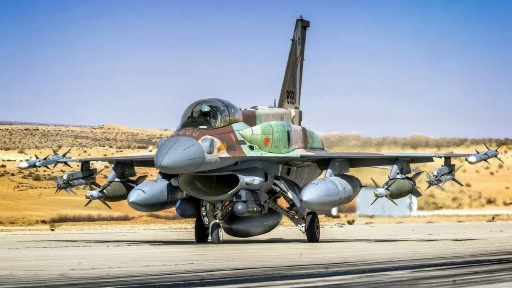

Combat History
Jump to a section: Israel | Gulf War | Balkans | War on Terror | Air-to-Air Record
The F-16 has the most extensive combat record of any Western fourth generation fighter. It has been used in combat by at least ten nations, across conflicts spanning four continents, from the deserts of the Middle East to the mountains of Afghanistan and the urban battlefields of the Balkans. In every conflict it has entered, the F-16 has demonstrated both its versatility as a platform and its effectiveness as a weapon of war. Its air-to-air record is particularly impressive: the F-16 has scored over 70 confirmed aerial kills against zero air-to-air losses.

An Israeli Air Force F-16I Sufa — the IAF has used the F-16 in more combat operations than any other operator.
Israel: The F-16’s First Combat Operator
The Israeli Air Force (IAF) was the first operator to use the F-16 in combat, and remains the most combat-experienced F-16 operator in the world. Israel received its first F-16s in 1980 and wasted little time putting them to use.
- Operation Opera (June 7, 1981)
- In the first combat use of the F-16, eight Israeli F-16As, escorted by six F-15 Eagles, flew a round trip of approximately 1,100 km to destroy Iraq’s Osirak nuclear reactor near Baghdad. The strike was carried out with unguided bombs delivered in a precise dive-bombing attack, destroying the reactor and setting back Iraq’s nuclear weapons programme. All fourteen aircraft returned safely. The operation demonstrated the F-16’s ability to carry out a long-range precision strike and survive hostile airspace.
- Operation Mole Cricket 19 (June 9–10, 1982)
- During the First Lebanon War, Israeli F-16s participated in one of the largest air battles since the Second World War. In two days of intense fighting over the Bekaa Valley, Israeli aircraft destroyed approximately 82 Syrian aircraft for no aerial losses. F-16s claimed the majority of the kills, primarily against Syrian MiG-21s and MiG-23s, using a combination of the AIM-9L Sidewinder missile and the internal M61 cannon.
The Gulf War (1991)
During Operation Desert Storm in January–February 1991, the F-16 flew more sorties than any other coalition aircraft. USAF F-16s flew over 13,000 sorties during the conflict, striking targets including airfields, command-and-control facilities, bridges, ammunition depots, and armoured formations. The aircraft operated primarily as a conventional bomb truck in this conflict, delivering Mk 82 unguided bombs and CBU cluster munitions against area targets.
Despite flying such a high volume of missions in a heavily defended environment, only three F-16s were lost to enemy action during the conflict. One pilot, Captain Scott O’Grady, was shot down by a Serbian SA-6 missile over Bosnia in 1995 and survived six days in the field before being rescued by a US Marine helicopter crew — an incident that highlighted both the vulnerability of aircraft to modern surface-to-air missiles and the importance of survival training.
The Balkans (1994–1999)
F-16s served extensively during NATO’s interventions in the former Yugoslavia. During Operation Deliberate Force over Bosnia in 1995 and Operation Allied Force over the Federal Republic of Yugoslavia in 1999, F-16s performed a wide variety of missions including:
- Combat Air Patrol (CAP) – Maintaining air superiority over the conflict zone to prevent Yugoslav aircraft from interfering with NATO operations.
- Suppression of Enemy Air Defences (SEAD) – F-16CJ Wild Weasel variants used the HARM missile to destroy Yugoslav radar and surface-to-air missile systems.
- Precision Strike – Using LANTIRN-equipped Block 40 aircraft to deliver laser-guided bombs against bridges, fuel depots, and military infrastructure with minimal collateral damage.
- Close Air Support (CAS) – Supporting ground forces and Kosovo Liberation Army units under fire from Yugoslav army and paramilitary forces.
- Reconnaissance – Carrying the LANTIRN navigation pod in a reconnaissance role to provide imagery of targets before and after strikes.
F-16 Air-to-Air Kill Record
The F-16’s air-to-air combat record is among the finest of any modern fighter. Across multiple conflicts, F-16 pilots have achieved over 70 confirmed aerial victories against zero air-to-air losses in beyond-visual-range combat. The vast majority of these kills were achieved by Israeli and Pakistani pilots, with the remainder scored by USAF, Venezuelan, and other operators.
| Operator | Confirmed Kills | Aircraft Types Defeated | Primary Conflicts |
|---|---|---|---|
| Israel (IAF) | > 44 | MiG-21, MiG-23, MiG-25, Su-22 | Lebanon War 1982, various |
| Pakistan (PAF) | > 10 | Su-22, An-26, MiG-23, Su-25 | Afghan War Soviet era, 1980s |
| United States (USAF) | 5 | MiG-23, MiG-29, MiG-21 | Gulf War, Balkans |
| Venezuela (VVFA) | 1 | Cessna light aircraft (drug interdiction) | Counter-narcotics operations |
| Turkey (TurAF) | 1 | Su-24 (Russian) | Syrian border incident, 2015 |
← Back to Home